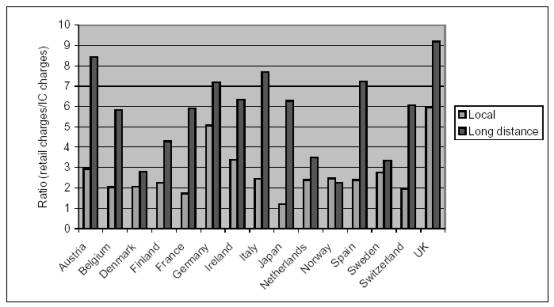
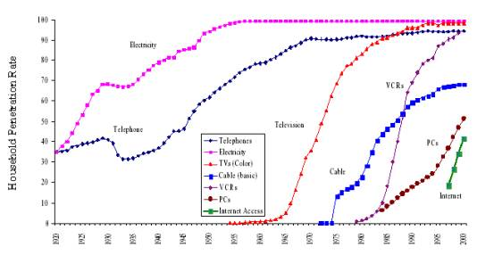

О концепции развития рынка телекоммуникационных услуг в России
1. Введение
Одной из отличительных особенностей последних лет стало фактическое окончание спора о национальной исключительности России, завершившееся победой универсалистов.
Эта тенденция на двух последних парламентских выборах проявилась, например, в виде апелляции к европейскому опыту блока Социал-демократы в 1995 (Хотите жить как в Европе голосуйте за Социал-демократов) и СПС в 1999 (Жить как в Европе, не выезжая из России). Научные же дискуссии широко используют межстрановые сравнения, материалы Всемирного Банка (относительные дирижисты), опыт Новой Зеландии (относительные либералы).
Эта ситуация оказала влияние и на решение практических вопросов, когда стандартное обсуждение строится на обосновании полезности и применимости тех или иных аспектов зарубежного опыта.
В полной мере это относится и к реформе телекоммуникаций, где планируемые преобразования основываются на использовании лучшей практики, рекомендованной ОЭСР и Всемирным Банком. По нашему мнению, в данном случае предлагаемые принципы реформирования скорее ухудшают существующую ситуацию, а предлагаемые меры и цели реформы не в полной мере совместимы друг с другом.
Рассматриваемый Государственной Думой проект поправок к закону О связи основывается на созданной Министерством связи Концепции развития рынка телекоммуникационных услуг в России (далее - Концепция), которая в силу своей структуры наиболее удобна для анализа предлагаемых изменений. Именно на содержании данного документа мы и остановимся более подробно.
2. Общие положения
Рассматриваемая Концепция обладает серьезнейшими дефектами, которые препятствуют максимальному развитию отрасли связи.
Во-первых, декларируется, что в рамках настоящей Концепции рассматриваются вопросы развития телекоммуникационных услуг. Вопросы развития почтовых услуг, радио и телевидения должны быть определены отдельными документами.
Данный подход страдает недальновидностью - уже в ближайшее время данные подотрасли отрасли связи станут близкими заменителями и раздельное регулирование для отдельных отраслей будет препятствовать формированию эффективных пропорций в рамках отрасли.
Так, например, услуги телерадиовещания могут передаваться не только через радиочастоты, но и при помощи кабельных технологий. Телефонные компании, очевидно, также могут оказывать кабельные услуги. Телефонные же услуги могут предоставлять спутниковые сети, операторы мобильной связи, а также компании, владеющие кабельными телевизионными сетями.
В данной ситуации, регулирование любой из подотраслей имеет непосредственное значение для развития других. Более того, ошибки регулирования любой из подотраслей ухудшат состояния или перспективы развития других.
Во-вторых, две из трех заявленных в Концепции целей находятся в явном противоречии друг с другом. Так Концепция предполагает:
Очевидно, что здесь содержится конфликт одно дело, предоставлять услугу, там где есть потребность, другое в каждом населенном пункте. Более того, само употребление термина потребность в любом экономическом тексте крайне опасно и часто свидетельствует об экономической неграмотности, по сути, исходя из ложного противопоставления платежеспособного и неплатежеспособного спроса. Опасность состоит в том, что потребности в отличие от спроса не являются сколь-нибудь точно определимой категорией.
В-третьих, несмотря на то, что концепция предлагает отказ от регулирования, основанного на ошибочной неоклассической теории естественной монополии (Развитие рынка телекоммуникационных услуг во многих зарубежных странах показывает, что в результате технического прогресса и значительного увеличения спроса на услуги связи данный рынок перестал быть естественной монополией. Аналогичная ситуация характерна и для современного рынка телекоммуникационных услуг Федерации), что является существенным шагом вперед, она предполагает применение в отрасли связи ФЗ О конкуренции и ограничении монополистической деятельности на товарных рынках от 22 марта 1991, основанный на другой, также ошибочной, неоклассической теории монополии.
Относительно антимонопольной теории, истории и практики можно сказать следующее:
-
Практика показывает, что антимонопольные законы нередко используются не для защиты конкуренции, а ее замены, являясь, по сути, одной из форм недобросовестной конкуренции. Более того, монополистическое ограничение производства концептуально неотличимо от потребительского поведения это извлечение полезности из товара без использования обмена.
-
Теория антимонопольного регулирования обладает серьезными изъянами, что убедительно показывается рядом научных школ в широкой литературе и многочисленных публикациях. В том числе:
-
НТМ основана на неверном понимании сути конкуренции. В частности, за идеал конкуренции берется внутренне противоречивая, нереалистичная ситуация, противоречащая процессу конкуренции, означающая ее результат и конец.
-
Игнорируется оценочный характер спроса и субъективный, ненаблюдаемый характер альтернативных издержек.
-
В рассуждениях смешиваются экономические функции и реальные экономические агенты.
-
Используется понятие нормальной прибыли, противоречащее основам теории.
-
История появления этого вида законодательства показывает, что причиной его принятия являлся не монополизм, а жесткая конкуренция в ряде отраслей в эпоху индустриализации, сопровождавшаяся бурным их ростом, что порождало недовольство менее успешных, но более многочисленных конкурентов.
Само же принятие данного ФЗ в 1991, по сути, до широкого развития рыночных отношений можно объяснить его идейной близостью с советской эпохой. В частности, можно провести прямую аналогию между борьбой с тунеядством, когда граждане обвинялись в недостаточном трудовом вкладе в чужое благосостояние, и антимонопольными законами, которые направлены против недостаточного служения капитала обществу.
В-четвертых, Концепция ставит задачу обеспечение равных прав для всех операторов связи. Проблема здесь состоит в том, что равенство прав операторов связи здесь понимается, прежде всего, как равенство прав на существующую инфраструктуру связи, декларируя право на присоединение, о котором речь пойдет ниже. Равенство должно быть не с другими операторами, а с другими гражданами, которые не имеют право без согласия владельца пользоваться чужой собственностью.
В-пятых, Концепция предполагает технологическую политику обеспечивающую целостное функционирование взаимоувязанной сети связи. Слова целостное и взаимоувязанной в данном случае являются понятиями ограничительными. Поэтому Концепция направлена не на развитие вообще, а именно взаимоувязанное, что ограничивает возможности для конкуренции различных технологических стандартов благодаря принуждению к взаимосвязанности и, следовательно, унификации.
В следующих частях мы более подробно рассмотрим отдельные темы, затрагиваемые в Концепции.
3. Тарифное регулирование
Основной задачей в области тарифного регулирования, предлагаемой Концепцией, является обеспечение эффективности деятельности организаций связи в процессе оказания услуг путем установления тарифов, компенсирующих эксплуатационные затраты и обеспечивающих необходимую прибыль.
Данное положение не имеет никакого отношения к экономической теории, используя, с одной стороны, концепцию затрат не как альтернативных, а как бухгалтерских издержек.
Альтернативные издержки по определению означают предполагаемую полезность наилучшей из отвергнутых альтернатив. Бухгалтерские же издержки определяют как денежную оценку затрат на производство.
По своему определению бухгалтерские издержки выражаются в терминах цен (количественные числительные), а альтернативные издержки в терминах ценности (порядковые числительные). Соответственно, альтернативные издержки не могут быть ни в каком смысле измерены, т.е. сопоставлены с определенной единицей измерения. Более того, они никогда не могут быть точно определены, т.к. отвергнутая возможность так никогда и не будет испробована.
Однако авторы концепции в обсуждении экономических проблем, а не проблем бухгалтерской отчетности, вместо альтернативных издержек предлагают бухгалтерские.
Также не имеет никаких теоретических оснований концепция необходимой прибыли. Прибыль не необходимость, она не непосредственный результат деятельности, а то, что получилось после проверки предпринимательских планов жизнью и условиях меняющегося мира непременно соседствует с убытками. Тем не менее, несмотря на существование убытков, ни один идеолог тарифного регулирования не предлагал включить в цену и необходимые убытки.
Результатом тарифного регулирования является вывод целого сектор экономики из рыночного ценообразования, что исключает возможность рациональной деятельности в секторе и уменьшает в других, а также порождает все негативные последствия затратного ценообразования.
Таким образом, дерегулирование сектора и потребность в его развитии в идеале должны предполагать также и либерализацию ценообразования в секторе. Однако трудность создания политических коалиций в поддержку подобной реформы очевидна. Поэтому в качестве промежуточной задачи необходимо поставить цель вывести из под регулирования цены альтернативных операторов, а также операторов новых видов услуг, что создаст период постепенного перехода от старой системы к новой, а также вызовет ускоренный рост альтернативного сектора. При этом, доля традиционного оператора будет снижаться по мере постепенной распродажи активов альтернативным операторам, а сам традиционный оператор станет локомотивом развития новых технологий.
4. Частотное регулирование
На данный момент в России процедура получения радиочастот относительна сложна и является дополнительным барьером входа на рынок телекоммуникаций. Аналогичные сложности вызывает и получение разрешения на использование радиочастот и эксплуатацию радиоэлектронных средств (РЭС).
Концепция отражает понимание сложности процедур получения права на использование радиочастотного спектра и говорит о необходимости внедрения ясных и прозрачных правил распределения радиочастотного спектра. При этом замечается, что Основными направлениями совершенствования механизма лицензирования должно стать создание системы нормативных правовых актов, направленных в том числе на определение оптимального числа выдаваемых лицензий в пределах одной территории, а также установление конкурсного порядка выдачи лицензий.
Данное положение, безусловно, выглядит лучше, чем существующая сейчас непрозрачная система, однако является шагом назад по сравнении с практикуемыми во многих странах (США, Великобритания, Нидерланды, Германия, Венгрия и др) аукционами.
Широкое использование аукционов, наблюдаемое в последнее время, сопровождается также усилиями по развитию вторичного рынка лицензий, что означает все большую опору регулирующих органов на рыночные механизмы.
Так, начиная с 1996 года США ввели меры, направленные, с одной стороны, на разделение и дезагрегирование лицензий, а с другой, на развитие лизинга спектра. Первый вид мер означает, что владельцы лицензий могут их делить по частотам, а также географически. Стоит отметить, что данная практика касается не всех частот и только 0,1% выданных лицензий проходит процедуры разделения и дезагрегации. Среди возможных причин столь малого числа передачи лицензий можно назвать то, что данную практику отчасти заменяет лизинг спектра, а также достаточно высокие бюрократические издержки, когда процесс получение разрешения на передачу прав занимает не менее 3 месяцев. Для дальнейшего развития рынка производится смягчение технических требований до минимальных ограничений на излучение, а также постепенное снятие общественных обязательств по использованию спектра, что делает передачу прав более вероятной. Длинный срок действия аукционных лицензий (10 лет) и возможность их продления делает действие лицензий достаточно долгим, что также приближает к стандартным правам собственности, введению которых препятствует прямой запрет в Телекоммуникационном акте 1934 г.
Законодательство Канады также позволяет дезагрегирование и передачу контроля согласно заявительному принципу. Условием передачи прав на лицензию является параллельная передача вытекающих из оригинальной лицензии условий. Срок действия лицензии также составляет десять лет с очень высокой вероятностью продления еще на 10 лет. Подобный подход характерен также для Австралии и Новой Зеландии.
Европейское законодательства также позволяет передачу прав при условии отсутствия изменения использования (change of use). При этом, сам термин изменение использования не определен, что позволяет осуществлять вторичную передачу прав в широких пределах, ограниченных толкованием данного термина и использованием антимонопольных норм.
Мировая тенденция к дерегулированию, начавшаяся в 80-е гг, породившая практику аукционов по продаже частот, сняла часть проблем с рационализацией использования спектра, оставив, однако, еще некоторое количество проблем нерешенными.
Последовательное развитие идей дерегулирования привело, в конечном итоге, к росту понимания того, что радиочастотный спектр может и должен находиться в частной собственности.
Традиционное регулирование основывается на концепции спектра как одного из природных ресурсов, что порождает аналогии с использованием нефти или угля, когда ограниченный ресурс потребляется и проблема состоит в том, чтобы определенным образом рационировать потребление.
Однако есть и другое подход к постановке проблемы, возникающий в соответствии с физической сущностью передач с использованием радиочастотного спектра. В рамках данного подхода внимание обращается внимание на то, что спектр является не природным ресурсом, а артефактом, существующим благодаря наличию определенных передающих и принимающих устройств. Благодаря этому внимание обращается на стабильность функционирования каналов связи между принимающими и передающими устройствами т.е. проблему электромагнитной совместимости, ситуации, когда работа одного передатчика не мешает работе другого.Такая совместимость может достигаться путем разведения передающих устройств в пространстве, частоте и поляризации сигнала. Необходимость такого разведения делает электромагнитные каналы редкими1 .
____________________________
1Существо проблемы легче всего понять в другой, световой, части спектра. Цвет не потребляется и не исчерпывается в процессе восприятия. Редкость состоит исключительно в ограниченной способности человеческого глаза видеть на одной поверхности несколько различных цветов, которые нередко сливаются в один т.е. одни цвета мешают другим. Однако эту проблему можно решить с помощью различных технических усовершенствований глаза, например, микроскопа.
Редкость, однако, не предполагает, что количество каналов является фиксированным. Количество каналов меняется в соответствии с развитием технологии и изменениями в спросе.
Так, в области телевещания ограничивающим фактором в уменьшении необходимого размера полосы, является спрос. Если бы подобное изменение было бы экономически оправдано, размер полосы (6 МГц в США в 1971 г) мог бы быть уменьшен в 100 раз. Подобные утверждения иллюстрируются ростом количества AM станций в США с 764 в 1939, когда Федеральная комиссия по коммуникациям признавала спектр насыщенным, до более чем 4000 в 1982.
Однако фактором, ограничивающим подвижность размера полос, является отсутствие частных передаваемых прав на вещания. Как система лицензирования, так и система аукционов, предполагает наличие заранее заданных, полос вещания, не приспосабливающих немедленно к изменениям в спросе и технологиях и создающих негибкость не только в узком спектре радиовещания, но и во всей отрасли телекоммуникаций, становящейся все более интегрированной.
Выбор системы частной собственности на радиочастотный спектр предполагает установление торгуемых (и делимых) прав на вещание на определенной частоте на определенной территории с ограничениями на размеры излучение за пределы данной территории и помехи за пределами присвоенной полосы частот. Опыт проведение такой реформы в Гватемале и Сальвадоре и показал хорошие результаты.
Во-первых, данная практика сделала доступ на рынок не только достаточно простым и быстрым, но также и дешевым. При том, что в Гватемале права на спектр гораздо более широки, чем в других странах, Гватемала имеет одну из самых низких стоимостей получения данных прав относительно душевого ВВП, что является следствием конкуренции.
Во-вторых, либерализация рынка послужила быстрому развитию рынка мобильной связи, подключение к которой стало более широким, чем к фиксированной. Подключение к фиксированной связи с 1997 по 2001 поднялось с 4,1% до 6,4%, а мобильной с 0,6% до 7,5%, что составляет 73% в год. И в Гватемале за 1997 по 2001 количество минут мобильной связи удваивалось каждый год. Только в одной седьмой стран Латинской Америки наблюдался больший рост.
В-третьих, концентрация на рынке мобильной связи в Гватемале и Сальвадоре (по индексу Херфиндаля-Хиршмана) равна соотвтетсвующему индексу для Аргентины и Чили, которые имеют большее население и большее ВВП, что делает наличие многих провайдеров мобильной связи более вероятным.
5. Присоединение
В Концепции говорится, что в основе механизма государственного регулирования деятельности операторов связи по оказанию услуг присоединения должны лежать следующие базовые принципы:
-
обязательность присоединения;
-
отсутствие дискриминации;
-
прозрачность расчета цен на услуги присоединения, ориентация на себестоимость и нормативный уровень рентабельности.
Сутью данных принципов является существование принудительного права (фактически требования к другим) на присоединение по регулируемым законодательством ценам, практикуемого в большинстве зарубежных стран, но отсутствующего, например, в Новой Зеландии и Турции (т.н. концепция открытого доступа).
Практика реализации открытого доступа порождает ряд серьезных проблем.
Во-первых, открытый доступ вызывает размывание прав собственности, заставляя частные компании передавать контроль над своими мощностями и технологиями.
Во-вторых, открытый доступ уменьшает стимулы к инновациям и развитию индустрии. Фирмы будут инвестировать и расширяться гораздо меньше при правовом режиме, заставляющем их делиться результатами своей деятельности с конкурентами.
При этом, можно заметить, что открытый доступ вовсе не увеличивает конкуренцию. Реальные продукты будут предоставляться владельцами сетей, а присоединившиеся к конкурирующей сети будут являться в данном случае ее дилерами, не увеличивая возможностей потребителя и даже уменьшая их через снижение стимулов к инвестициям. Принудительное присоединение создает серьезные стимулы переходы от конкуренции за счет ввода мощностей к конкуренции за счет перепродажи услуг, получаемых за счет заниженной цены. Соотношение розничных цен и тарифов на присоединение, основывающееся на данных ОЭСР (Рисунок 1) подтверждает данную точку зрения.

Рисунок 1. Соотношение розничных цен и цен присоединения.
В-третьих, открытый доступ несовместим с быстрым развитием отрасли телекоммуникаций т.к. реализация права на присоединении означает одновременно и необходимость унификации технологий, что снижает конкуренцию стандартов. Некоторые исследования показывают наличие значимой отрицательной взаимосвязи фондовых индексов Интернет-компаний и побед исков о принудительном присоединении2 , что отражает оценку инвесторами влияния актов о присоединении на развитие Интернет-рынка.
_______________________
2 George Bittlingmayer, Thomas W. Hazlett, "Open Access:" The Ideal and the Real, p. 19
Признание указанных проблем делает возможным отказ от практики принудительного свободного доступа, а также замену государственного лицензирования провайдеров телекоммуникационных услуг частной системой конкурирующих стандартов.
6 Универсальная услуга связи
Понятие универсальной услуги связи является еще одним ключевым понятием в Концепции в регулировании отрасли телекоммуникаций. Так, использующий данное понятие проект ФЗ О связи, подготовленный Минсвязи, определяет ее как услугу связи, оказание которых любому пользователю на территории Российской Федерации с заданный срок, с установленным качеством и по доступной цене является обязательным для операторов универсального обслуживания. При этом оператор универсального обслуживания либо определяется по результатам конкурса, либо (при отсутствии заявок) назначается Правительством РФ. Возможные убытки от подобной деятельности погашаются за счет резерва универсального обслуживания.
Распространенность в мире практики универсального обслуживания объяснимой, прежде всего, с политической точки зрения, однако, не означает, что ее целесообразно использовать в России.
Во-первых, это связано с общим низким уровнем экономического развития, делающего социальные программы достаточно тяжелым бременем.
Во-вторых, в связи с тем, что данная концепция, нацеленная на максимально широкое распространение информационных технологий имеет, тем не менее, с нашей точки зрения, противоположный эффект.
Так как универсальные услуги установлены для поддержки узких групп населения за счет потребителей в целом, они мешают рациональному развитию инфраструктуры информационного общества. По определению, формируемый за счет компаний фонд состоит из денег, которые компании использовали бы другим образом или в другом регионе. Таким образом, строительство инфраструктуры для целевых групп означает отказ от строительства в интересах тех групп, которые готовы за нее платить, создавая богатство для себя и для экономики в целом.
Однако, в случае если правительство имеет отраслевые приоритеты, то субсидирование было бы более безопасным для развития сектора, если бы производилось за счет средств, получаемых из других секторов экономики.
Однако, есть и еще одна проблема - распределение денег из фонда универсальных услуг оказывает негативное влияние на конкуренцию. Очевидно, что имеет мало смысла субсидировать несколько компаний в их конкуренции друг с другом. Но, давая субсидию только одной компании, фонд делает маловероятным желание второй компании участвовать в конкуренции.

Рисунок 2. S-кривые для различных технологий.
Более того, очень вероятно, что цели универсальной услуги могут достаточно быстро и эффективно достигаться без соответствующего вмешательства, путем естественного роста отрасли.
Для анализа процесса секторального роста обратимся к интуитивно-понятной концепции S-кривых, описывающих изменение во времени количества пользователей определенной технологии. Первоначально количество пользователей любой технологии относительно немногочисленно, затем, в случае успеха, наблюдается быстрый рост, и затем насыщение с относительно небыстрым ростом. В конечном итоге технологией пользуются практически все, кто хотел бы ее иметь.
Рисунок 2 показывает, что новые технологии распространяются быстрее, чем в прошлом. Двигателем распространения данных технологий является снижение их стоимости, которое порождается конкуренцией между фирмами, желающими привлечь новых пользователей по мере насыщения категорий населения с более высокими доходами. Так, в США с 1984 по 1999 количество пользователей мобильных телефонов возросло со 100 тысяч до 100 миллионов. При этом, средняя стоимость услуг упала с 2000$ до 180$ при возросшем качестве услуг. В случае, если бы правительство изначально компенсировало компаниям убытки от оказания услуг мобильной связи наименее платежеспособным клиентам, компании не имели бы значительного стимула к снижению издержек, как это и происходит во всех случаях применения затратного ценообразования, широко практикующегося в регулировании естественных монополий и приводящего к консервации существующих технологий и структуры издержек.